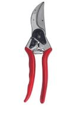
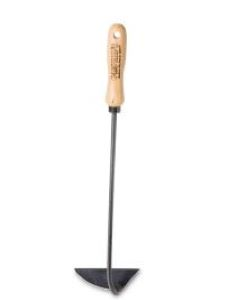

Documenting the useful items we use around the homestead. No toys really, of course, it's just that some tools are more fun to use than others.


This wonderful and fun attachment to the Kioti tractor will chip up to 5" diameter slash and brush. Creating piles of useful wood chips for a wide variety of homestead projects.